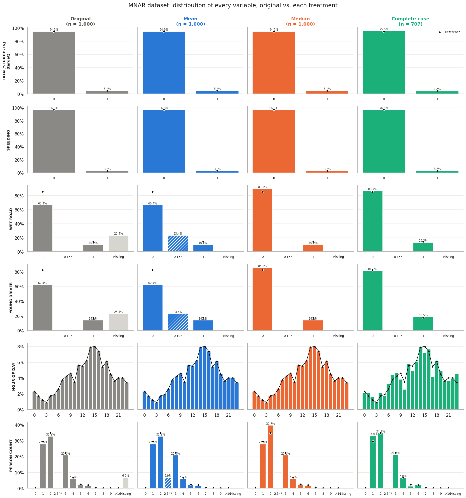
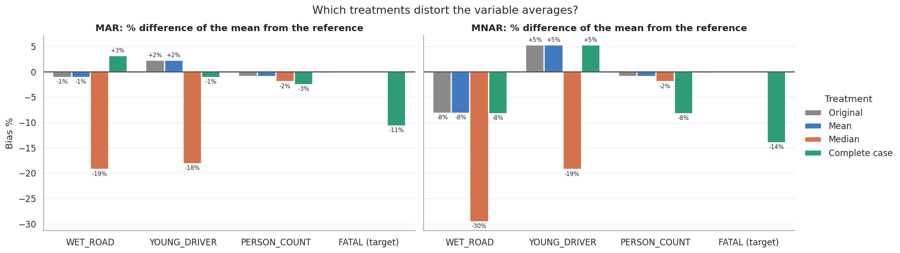
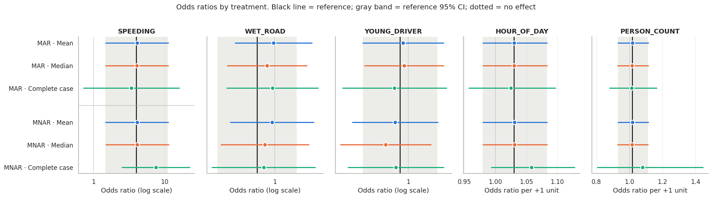
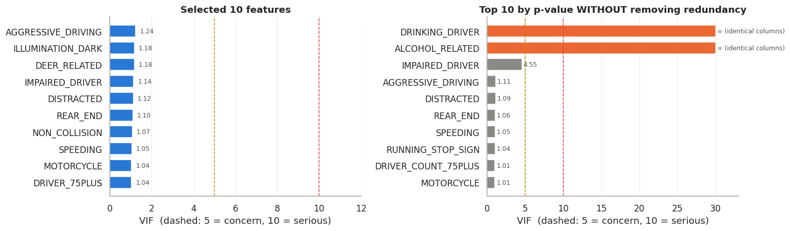
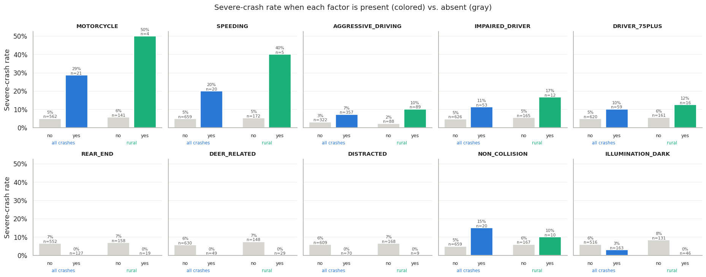
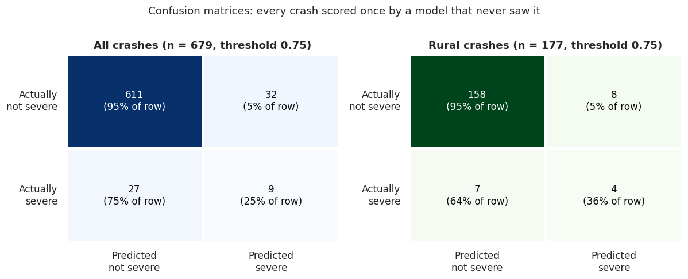

Missing Data and Rural Crash Severity in Pennsylvania
How missing-data treatments bias a crash-severity model, and which factors make rural crashes fatal or seriously injurious
2026-10-12
Two questions
- Crash databases are incomplete and messy. How we handle that changes the answer to “what makes a crash deadly?”
- Part I: missing data. On the same 1,000 crashes, missing at random (MAR) vs. not at random (MNAR): how do mean, median and complete-case treatments bias a logistic regression?
- Part II: rural severity. With first principles + a simple filter, which ten factors best predict fatal / serious-injury crashes, and which matter most on rural roads?
- Outcome:
FATAL_OR_SUSP_SERIOUS_INJ, rare (≈ 5% of crashes).
Data: PennDOT crash records and data dictionary.
Data and data quality
MAR_ex1.xls, MNAR_ex1.xls: the same 1,000 crashes, 6 columns, different gaps.features.xls: 80 columns of crash, flag and roadway fields.- The 1,000 rows are only 679 crashes. The ROADWAY join repeats a crash once per road.
URBAN_RURAL = 4 is undefined. PERSON_COUNT = 48 is a real school-bus crash; = 0 is implausible.
Part I: Missing-data treatments
Two kinds of missingness
- MAR: gaps depend only on what we can see. MNAR: gaps depend on the hidden value itself.
- MAR: scattered gaps → 38.5% of rows incomplete.
- MNAR:
WET_ROAD and YOUNG_DRIVER vanish together → 29.3% of rows incomplete.
- Rows missing
WET_ROAD are more often severe (≈ 7.5% vs. 4.5%).
Rebuilding the truth to measure bias
- The three files never disagree where they overlap, and each hides different cells → combining them recovers most gaps.
- The last 93 cells are derived from complete fields:
WET_ROAD ← ROAD_CONDITION ∈ {08, 09} (100% agreement); YOUNG_DRIVER ← 16–20 driver counts (99.7%).
- Direct MNAR check (true hidden vs. observed values):
| MAR |
WET_ROAD |
0.152 |
0.143 |
0.77 |
| MNAR |
WET_ROAD |
0.184 |
0.133 |
0.05 |
| MNAR |
YOUNG_DRIVER |
0.145 |
0.185 |
0.17 |
→ MNAR is supported, mainly by WET_ROAD, but the evidence is borderline.
Side-by-side: original vs. treated (MNAR)

Which treatments distort the data?

- Median turns every missing yes/no into “no”: wet roads −19% (MAR), −30% (MNAR).
- Complete case drops severe crashes: fatal rate 5.1% → 4.4% (MNAR).
- Mean is right under MAR but inherits the observed-data bias under MNAR.
Accuracy and F1 barely differ
- No weighting: 94.9% accuracy, F1 = 0 (the model predicts “not severe” for everyone). We use balanced class weights.
- Fair test: train on treated data, test on true values of the same held-out rows:
| Mean |
0.085 |
0.092 |
0.517 |
0.536 |
| Median |
0.088 |
0.095 |
0.518 |
0.540 |
| Complete case |
0.092 |
0.099 |
0.520 |
0.541 |
| Reference |
0.098 |
0.098 |
0.540 |
0.540 |
- Differences are smaller than fold-to-fold noise (F1 sd ≈ 0.034). The predictors are weak (AUC ≈ 0.53).
Bias shows up in the coefficients

| Mean |
0.062 |
0.058 |
| Median |
0.040 |
0.059 |
| Complete case |
0.064 |
0.110 |
- Coefficient error vs. the reference (per-SD scale).
- MNAR complete case: speeding OR 7.5 vs. 4.0; CIs 64% wider.
Part II: What makes a rural crash severe?
Cleaning and the rural lens
- Deduplicate: 1,000 rows → 679 crashes (36 severe, 5.3%). This prevents copies of one crash from appearing in both training and test folds.
- Rebuild flags from complete source fields (99.6–100% agreement).
- Rural lens: only 11 of 177 rural crashes were severe, too few for a 10-feature rural-only model (≈ 10 events per feature needed). So we train on all crashes, then filter, evaluate and interpret for rural roads.
The proposed ten features
MOTORCYCLE |
5.7 / 8.8 |
REAR_END |
0 of 127 |
SPEEDING |
4.1 / 7.6 |
DISTRACTED |
0 of 70 |
AGGRESSIVE_DRIVING |
2.4 / 4.5 |
DEER_RELATED |
0 of 49 |
IMPAIRED_DRIVER |
2.4 / 3.1 |
ILLUMINATION_DARK |
5 of 163 |
DRIVER_75PLUS |
2.1 / 2.2 |
|
|
NON_COLLISION |
3.0 / 1.7 |
|
|
No multicollinearity

- All VIFs < 1.25; the largest correlation is 0.29 (darkness × impairment).
- Without the redundancy step: identical columns (
ALCOHOL_RELATED = DRINKING_DRIVER), VIF = ∞.
Association tests: Pearson and chi-square
- p-value = is there any association? (small p → associated). Strength (\(|r|\) or Cramér’s V) = is one redundant? > 0.8 drop one, 0.7–0.8 marginal.
- Aggressive driving × alcohol: p = 0.010 (associated) but V = 0.10 → keep both.
- Final ten: 19 of 45 pairs significant, max V = 0.29 → keep all.
- Pearson: only vehicle count × total units r = 0.97 (neither selected).
- Redundant flags removed in selection: V = 0.88–1.00.
Feature analysis

- Rural: 50% of motorcycle crashes and 40% of speeding crashes were severe.
- Deer strikes: 4× more common on rural roads, never severe. Darkness looks protective only because of the crash mix (few motorcycles at night, more deer).
Where the model succeeds and misses

What drives severe rural crashes
- Aggressive driving contributes the most (9 of 11 severe rural crashes; PAF ≈ 36%).
- Motorcycles are the most dangerous factor (OR ≈ 4.6); impairment and speeding ≈ 2.4×.
Discussion and limitations
Limitations
- Few events: 36 severe crashes, 11 rural → wide intervals; only motorcycle clearly ≠ 1.
- Duplicates affect Part I too: the MAR/MNAR files share the repeated crashes, so absolute scores are inflated (the comparison between treatments is still fair).
- Association, not causation (darkness, zero-severe flags).
- Missing variables: seat belts, curves, two-lane head-on risk, distance to trauma care.
- Features selected on the full data → slightly optimistic scores.